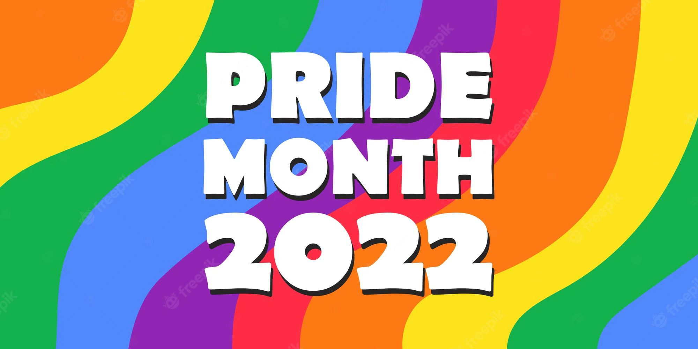
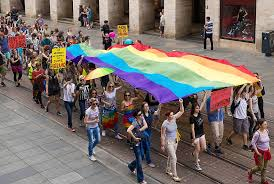
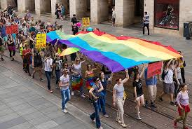

COMM envisions a world where all communities are accepted without exception.
As LGBTQ+ allies, we join hands and unite our voices to create a space
where no one faces discrimination based on their gender identity or
sexual orientation.Together we are working to transform minds and hearts
across society to embrace true inclusiveness.
What Is Pride Month and Why Is It Celebrated In June?
The Pride month celebrates LGBTQIA+ communities all across the world, their rights and culture. It is marked by a spirit of resistance and acceptance as opposed to an attitude of shame. Pride is now recognised as a massive celebration including marches, protests and parades. People gather in huge numbers across the world and express themselves in myriad forms.
June is celebrated as Pride month to commemorate the onset of a movement, a series of protests that began in 1970s in the United States to recognise the rights of these communities. Since then, Pride has been celebrated all over the world which includes holding parades and protests, organising parties and gatherings.

CELEBRATION OF 2022
1.Queer Lunch and Learn
We host a lunch and learn session to eduacte and engage staffs during pride months .This is a relaxing yet informative session
2. Happy Hour
Virtual happy hours are one of the best Pride Month ideas. These events are like partying with colleagues, minus the wait at the bar counter and bathroom lines.
Ensure to include everyone in this activity. In this celebration, your staff can party from their couch wearing their favorite outfits.

 
